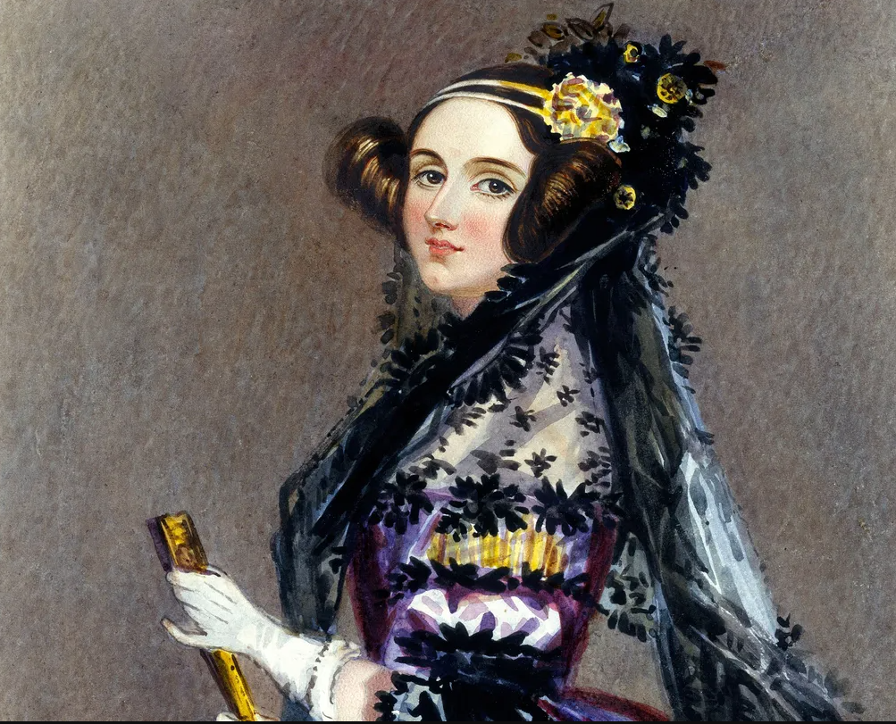

Charles Babbage

Considerado por muitos como o pai do computador, Babbage é o criador da Máquina Analítica e da Máquina Diferencial. Junto com Ada Lovelace, criou o primeiro algoritmo para a Máquina Analítica — um conceito muito à frente de seu tempo, que antecipava elementos essenciais dos computadores modernos.
Ada Lovelace
A primeira programadora da história escreveu o primeiro algoritmo para a Máquina Analítica de Babbage. Mesmo naquela época, ela já reconhecia que os computadores seriam capazes de muito mais do que simples cálculos matemáticos.
Alan Turing

Proponente da Máquina de Turing, um conceito fundamental para a computação moderna. Também desenvolveu o Teste de Turing, utilizado para verificar se um computador é capaz de imitar a mente humana. Além disso, é conhecido por decifrar os códigos secretos dos alemães durante a Segunda Guerra Mundial — códigos esses produzidos pela máquina de criptografia chamada Enigma.
John von Neumann

Ele desenvolveu o conceito de programa armazenado, permitindo que dados e instruções fossem guardados na mesma memória. Isso tornou os computadores muito mais flexíveis e reprogramáveis, sendo a base da arquitetura dos computadores modernos.
Grace Hopper
Inventou o primeiro compilador, abrindo caminho para as linguagens de programação de alto nível, como o COBOL. Também ficou conhecida por popularizar a prática da depuração, tornando o processo de identificar e corrigir erros uma parte essencial do desenvolvimento de software.
Claude Shannon
Claude Shannon criou a teoria da informação, mostrando como dados podem ser convertidos em números binários (0 e 1) e transmitidos de forma eficiente, mesmo com ruídos. Ele também definiu conceitos como entropia (quantidade de informação) e capacidade do canal (limite de transmissão segura), abrindo caminho para a era digital.
Dennis Ritchie e Ken Thompson

Dennis Ritchie foi o criador da linguagem de programação C e, junto com Ken Thompson, desenvolveu o sistema operacional Unix, estabelecendo as bases para a programação moderna e a arquitetura dos sistemas que usamos até hoje.
Tim Berners-Lee
.jpg)
Tim Berners-Lee inventou a World Wide Web (WWW), criando o conceito de páginas ligadas por links e os primeiros protocolos que tornaram a internet acessível a todos.
Linus Torvalds

Linus Torvalds criou o sistema operacional Linux, um sistema operacional de código aberto que se tornou a base de servidores, smartphones e milhões de dispositivos no mundo.
Bill Gates

Junto com Paul Allen, Bill Gates cofundou a Microsoft e popularizou o uso do computador pessoal, tornando o software acessível para empresas e usuários comuns.
Steve Jobs
.jpg)
Juntamente com Steve Wozniak e Ronald Wayne, Steve Jobs cofundou a Apple e revolucionou várias indústrias com produtos inovadores como o Mac, o iPhone e o iPod, combinando tecnologia e design.
Larry Page e Sergey Brin
Larry Page e Sergey Brin criaram o Google, desenvolvendo um motor de busca inteligente que mudou a forma como o mundo acessa e organiza informações.